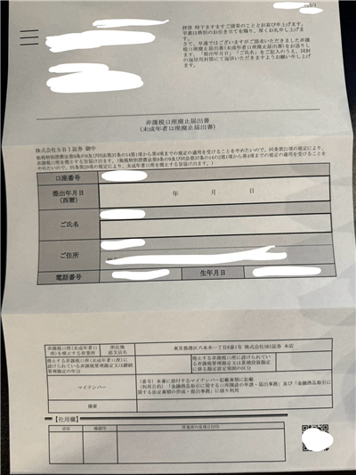

まず、前提として、私は記事投稿時点で学生です。別にSBI証券との手続きに未成年でも成人でも大差はないと思いますが、一応断っておきます。
私はSBI証券のジュニアNISAで趣味程度に株の運用をしていました。親が私の名前を借りてジュニアNISAを使っていたわけではなく、私自身が株の売買をしていました。
バイトをやめて収入が無くなったので、貯金として使っていたジュニアNISA口座からお金を使いたくなりました。
しかし、ジュニアNISAのお金は簡単に出金できないため、SBI証券の場合はジュニア口座を解約することで、取引口座に移すことができるそうです。
ジュニアNISA口座からお金を出勤する方法については、SBI証券の公式サイトに案内がありました。
ジュニアNISA口座から資金を出金する方法を教えてください公式サイトによると、まず「NISA口座廃止届出書」を請求する必要があるそうです。今どきWeb上からできないんですかね。
ページ下部に「【書類請求について】」の項目があり、資料請求は電話かカスタマーサービスで行うようです。私はカスタマーサービスセンターから資料請求を申し込もうと試みたんですが、なぜか電話で申し込む必要があると返されました。仕方ないので【書類請求について】の一番したのリンク、【かんたん資料請求（自動音声）】から試してみました。
050から始まる電話番号へ電話をかけ、自動音声の案内に従って進みます。途中で部支店と口座番号を聞かれるので、あらかじめ準備しておきましょう。
口座番号は「SBI証券公式ホームページ > 口座管理 > お客さま情報 設定・変更」に記載されています。PC版ページで確認しましょう。
口座番号をキーパッドで入力し進むと、生年月日を声で読み上げるよう指示されます。音声認識ですが、伝えた内容は人の目で確認されるので、「5月」を「05月」と話す必要はありません。ただし、生年月日は西暦で指定されているので、それは守りましょう。
資料請求が完了すると、電話をかけた番号にショートメールが送られてきます。音声認識で読み上げた内容が間違っている場合は、送られてきたURLから編集できます。期限は送られてから1時間なので、すぐに確認しましょう。
私の場合、資料請求をしたのが木曜日で、資料が届いたのが翌週の火曜日でした。土日を挟んだので5日かかりましたが、曜日によっては届くまでの期間が前後するかもしれません。
こんな感じの紙が届きました。記入すべき事項は、返送した日程と氏名だけです。返送用の封筒が同封されているので、それに入れてポストへ投函するだけです。
資料をポストへ投函してから、8日でジュニアNISA口座の払出通知書の確認のメールが来ました。特に解約されたなどの旨は書いていないので気づきづらいかもしれません。
SBI証券公式サイトから口座サマリーを見てみると、ジュニアNISA口座の項目が消えて、取引口座の資産額に統合されていました。あとは普段通り出金し、現金となりました。
資料請求を申し込んでから、現金になるまで15日間でした。ジュニアNISAは解約を申し込んでから解約されるまで時間がかかると聞いていましたが、私の場合、ジュニアNISA口座に入っていた金額が少なかったので、処理が早かったのかもしれません。
ちなみに、ジュニアNISA口座から出金したい場合はジュニアNISA口座を解約する以外の方法がないので、必然的に全額出金されることになります。その点はお忘れなく。
ではまた。